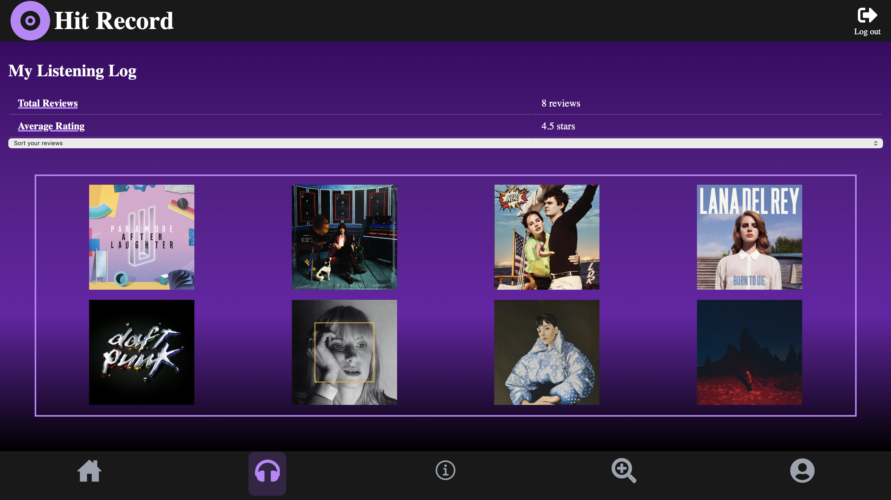
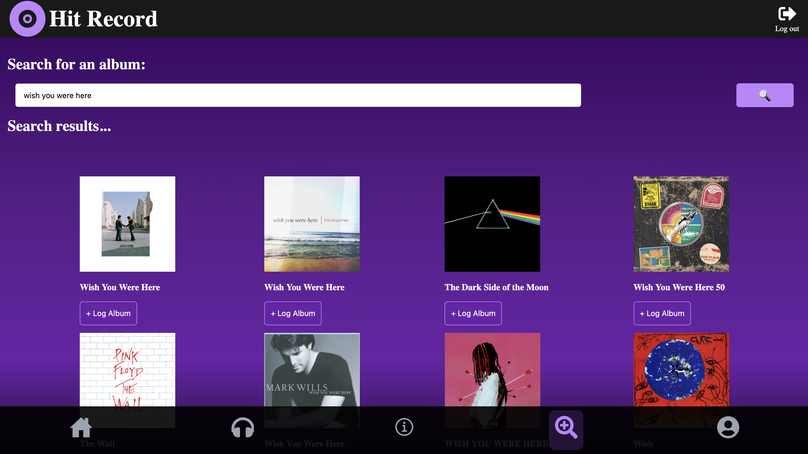
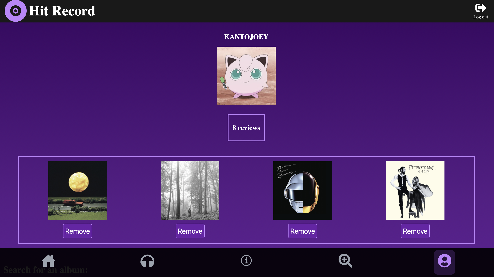

Hit Record is a full stack album-logging application that allows users to rate and review albums, as well as showcase up to four of their favorite albums on their user profile page. The application's front end is built in the React library utilizing a mix of JavaScript, HTML, and CSS. The application's back end consists of a Java Spring Boot application with a connected database managed through MySQL Workbench. Additionally, the search feature is powered by a connection to Spotify's public API service.
Through Hit Record, users can create their own profiles to begin their album-reviewing journey and store their content over time. The application also allows for users to edit and delete reviews on their profile as well as sort their reviews by features such as artist name, album name, and publishing time. Whether you are looking to write long-form critiques or simply just want keep tabs on your listening history, with Hit Record, everyone's a critic.
To learn more about Hit Record, including the full tech stack and installation instructions, check out the README at my project repo. Disclaimer: a Spotify premium account is required to gain access to the API functionality.

The Listening Log summarizes all of the user's reviews and allows for sorting based on factors such as rating and album name.

The search page takes the user's input and returns results from Spotify's public API.

The user can feature up to four of their favorite albums on their profile page.